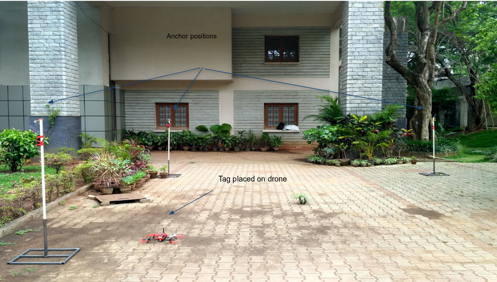

How Does GPS work??
The working/operation of Global positioning system is based on the 'trilateration' mathematical principle. The position is determined from the distance measurements to satellites. From the figure, the four satellites are used to determine the position of the receiver on the earth.
But why replace GPS?
Innacuracies of GPS signals puts forth a major road block autonomous drone navigation. In urban environments there is often loss of GPS signal or innacuracies. Here are a few reasons why..
-Clouds and fog are easily penetrated by the signals, but not wood, rock, brick, concrete or metal.
-Inside buildings, in urban canyons and industrial complexes, the signal may be weak or fail.
-In the middle of a narrow valley, at the edge of mountain slopes, in the woods or heavily wooded areas, it may cause signal failures.
-In tunnels or underground no signal is received normally.
Solving the problem of trilateration using UWB beacons
Provide Drone corridors and embed the UWB sensors as a part of a smart infrastructure. And through trilateration and SLAM algorithms we can localize the drone at any instance given the infrastructure supports the technology.

How can UWB solve this?
Fig:Ping initiated by tag to all anchors around
-Involves RF Beacons operating in the 3.5Ghz - 6.5Ghz band transceiving packets and determining the distance between each other
-The “Tag” beacon on a drone transmits an addressed PING to nearby stationary “Anchor” beacons and starts a timer.
Fig:Determine the unknown position using the range values recieved
-The valid Anchor responds back to the Tag with an ACK from which the time elapsed since Ping can be obtained, thereafter the distance between the two
-The spatial arrangement of the Anchors are known apriori
Fig:Simple algorithm to find the unkown point
Application and use cases
Indoor Navigation
1.Warehouse (Inventory management)
2.Industries and Factories (Surveillance and monitoring)
3.Security and surveillance in huge commercial spaces (Malls, Tech Parks)
Outdoor Navigation
1.Infrastructure aided navigation
2.Precise mobile-infrastructure monitoring
3.Provide a local frame coordinate system in an unreliable GPS environment
Autonomous junction Disambiguation and Precision landing using UWB localization
Autonomous Vehicle surveillance using Drones
Autonomous warehouse inventory management using Drones